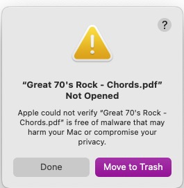

|
|
NoQ Help |

Welcome
NoQ is an application that watches for file changes and removes the quarantine file attribute.On macOS Sonoma (14.5) and later, opening a file with a sandboxed application that is not the default can trigger the setting of the quarantine attribute for certain types of files (e.g., PDF) that may contain HTML or code.
All applications installed via the Mac App Store are sandboxed to support macOS security checks. The quarantine attribute is managed by the system kernel and Gatekeeper, so there is no supported method for a sandboxed macOS app to prevent the system from setting the quarantine attribute or to remove it programmatically. Running NoQ before using non-default applications will allow files to be opened again without warning messages.
For example, because Finder is the default application for viewing PDF documents, the system will not set the quarantine attribute when Finder opens a PDF file. But changing the file's "Open with" setting to another application (such as PDF+MIDI) will cause the system to set the quarantine attribute. Once this happens, then the next time the file is opened, a warning message like this is displayed:

There is a application available called Pratique that can be used to remove existing quarantine flags from files that display the warning message. It can be downloaded from The Eclectic Light Company.